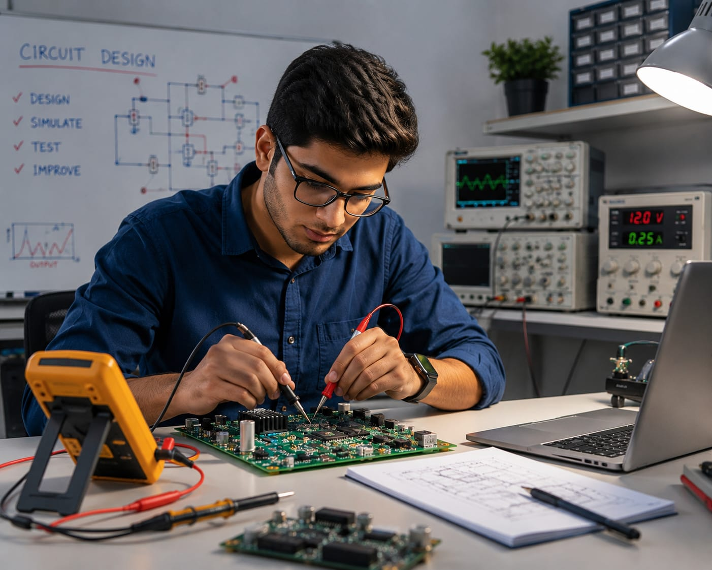

- Think about everyday devices like your phone, TV, Washing machine and Microwave oven.
- They all have small electronic parts inside them.
- These parts help the devices to work together.
- Someone has to design and test these electronic parts.
- That person is called an Electronics Engineer.
- 👉 In simple words: Electronics Engineers design and test electronic parts that make everyday devices work.
Electronics Engineer
🧑🎨 What Do They Do?

🎓 How to Become an Electronics Engineer
You have two options:
-
Start early with a Diploma
After Class 10, you can choose a relevant diploma course. Complete the diploma and join the second year of an engineering course by applying through lateral entry. -
Finish Class 12
Complete Class 11 and 12, then you can do a B.Tech./B.E. in the relevant field.
These beginner-level courses help students learn electronics, electrical circuits, electronic devices, troubleshooting, and hardware fundamentals.
Diploma in Electronics Engineering
Duration: 3 Years
Eligibility: Class 10 Pass
Entrance Exam: Polytechnic Entrance Exam / Merit-Based Admission
Diploma in Electronics and Communication Engineering (ECE)
Duration: 3 Years
Eligibility: Class 10 Pass
Entrance Exam: Polytechnic Entrance Exam / Merit-Based Admission
📝 Exam Details
(Click on the exam name to see full details)
Polytechnic Entrance Exam Merit-Based AdmissionNote: A diploma provides a strong foundation in electronics, circuit testing, and hardware maintenance. However, many Electronics Engineers continue to B.Tech through lateral entry to access advanced design, development, and research roles.
These degree programs help students learn electronics, microprocessors, communication systems, embedded systems, electrical systems, and hardware design.
B.Tech / B.E. in Electronics Engineering
Duration: 4 Years
Eligibility: 10+2 Pass with Physics, Chemistry, and Mathematics
Entrance Exam: JEE Main / State Engineering Entrance Exams
B.Tech / B.E. in Electronics and Communication Engineering (ECE)
Duration: 4 Years
Eligibility: 10+2 Pass with Physics, Chemistry, and Mathematics
Entrance Exam: JEE Main / JEE Advanced / University Entrance Exams
B.Tech / B.E. in Electronics and Telecommunication Engineering
Duration: 4 Years
Eligibility: 10+2 Pass with Physics, Chemistry, and Mathematics
Entrance Exam: JEE Main / State Engineering Entrance Exams
📝 Exam Details
(Click on the exam name to see full details)
JEE Main JEE Advanced State Engineering Entrance Exams University Entrance ExamsNote: Electronics Engineers should build practical skills in circuit design, microcontrollers, embedded systems, sensors, communication networks, and hardware troubleshooting through projects and laboratory work.
Diploma students can continue their studies through lateral entry and directly join the second year of a B.Tech / B.E. program.
B.Tech Lateral Entry in Electronics Engineering
Duration: 3 Years (Direct Entry into 2nd Year)
Eligibility: Diploma in Electronics-related branch
Entrance Exam: State Lateral Entry Entrance Tests
B.Tech Lateral Entry in Electronics and Communication Engineering (ECE)
Duration: 3 Years (Direct Entry into 2nd Year)
Eligibility: Diploma in Electronics / ECE
Entrance Exam: State Lateral Entry Entrance Tests
Note: Lateral entry allows diploma students to earn a Bachelor's degree, which opens opportunities in electronics design, embedded systems, telecommunications, semiconductor technology, automation, and research & development roles.
Postgraduate courses help students specialize in advanced electronics, embedded systems, semiconductor technology, VLSI design, and research.
M.Tech in Electronics & Communication Engineering
Duration: 2 Years
Eligibility: B.Tech / B.E. in Electronics, ECE, EEE, or related branches
Entrance Exam: GATE / State PG Entrance Exams
M.Tech in VLSI Design
Duration: 2 Years
Eligibility: B.Tech / B.E. in Electronics, ECE, EEE, or related branches
Entrance Exam: GATE / University PG Entrance Exams
M.Tech in Embedded Systems
Duration: 2 Years
Eligibility: B.Tech / B.E. in Electronics, ECE, EEE, or related branches
Entrance Exam: GATE / University PG Entrance Exams
📝 Exam Details
(Click on the exam name to see full details)
GATE State PG Entrance Exams University Entrance ExamsNote: Higher studies help students enter advanced fields such as semiconductor manufacturing, chip design, VLSI engineering, embedded systems development, robotics, defense electronics, and electronics research.
Note:
(Age limits, marks, and admission process may vary depending on the college or state.
Below are some colleges that offer these courses.
These courses are available in many colleges and universities across India. You can choose colleges based on your location, budget, and entrance exams.)
🏛️ Colleges offering these courses in India
(Tap on a college to visit the official website)
After 12th Pass (Bachelor's Degrees)
Indian Institute of Technology (IIT), Varanasi Indian Institute of Technology (IIT), Dharwad, Karnataka Symbiosis Institute of Technology, Pune, MaharashtraAfter Diploma (Lateral Entry)
National Institute of Electronics & Information Technology (NIELIT), New Delhi Cochin University of Science & Technology (CUSAT), Kochi, KeralaAfter Graduation (Master's Degrees / Advanced Specialization)
Indian Institute of Technology (IIT), New Delhi Manipal Institute of Technology (MIT), Manipal, Karnataka Vellore Institute of Technology (VIT), Vellore, Tamil NaduSTEP 1
Imagine you are working as an Electronics Engineer.
STEP 2
Your company wants to create a new smartwatch.
STEP 3
You design the electronic circuits needed inside the smartwatch.
STEP 4
You choose the electronic parts that will be used in the watch.
STEP 5
You test the design to make sure everything works correctly.
STEP 6
After manufacturing, the smartwatch can show time, track steps, and charge safely because of the electronic system you designed.
STEP 7
If you enjoy electronics, problem-solving, and creating new devices, this career may be right for you.
Where do Electronics Engineers work? (Job Roles + Growth)
Electronics Engineers work in : Electronics companies, Consumer electronics companies, Telecommunications companies, Automotive companies, Aerospace companies, Manufacturing plants, Semiconductor companies, Research laboratories, and Defense technology companies.
🟢 Beginner Roles
Junior Electronics Tester
(After Short-Term Certification / Diploma)
Uses multimeters and testing tools to check electronic circuits and devices.
Graduate Hardware Trainee
(After Diploma / B.Tech)
Tests prototype hardware and prepares simple technical reports.
🔵 Mid-Level Roles
Electronics Engineer
(After B.Tech / EEE / ECE + Experience)
Designs and develops electronic circuits for consumer and industrial products.
Hardware Development Engineer
(After B.Tech / EEE / ECE + Experience)
Selects components and creates hardware designs for electronic products.
🟣 Advanced Roles
Senior Systems Architect
(After M.Tech / Advanced Specialization)
Designs complex electronic systems used in industries and advanced technologies.
VP of Hardware Engineering
(After Advanced Executive Program + Experience)
Leads global engineering teams and oversees product development strategies.
Consumer Electronics Companies
Develop smartphones, smart TVs, wearable devices, and home electronics.
Computer Hardware Companies
Design electronic components used in computers, laptops, and servers.
Automotive Electronics Companies
Build electronic systems used in electric vehicles and smart cars.
Telecommunication Companies
Develop communication equipment, networking and wireless technologies.
Industrial Automation Companies
Create electronic control systems for factories and industrial machines.
Research & Development Organizations
Develop new electronic technologies, sensors, and hardware solutions.
(Click Yes or No for each question)
1. Have you ever wondered how a smartphone, TV, or Bluetooth speaker works when you press a button?
2. Do you like to learn how electronic devices work?
3. Do you like to learn how a smartphone is made?
4. Imagine you are working as an Electronics Engineer for a company that makes smart TVs. The company wants to develop a new TV model. Your job is to design and test the electronic circuits inside the TV so that the screen, speakers, remote control, and other features work properly. Would you enjoy doing this kind of work?
5. Imagine a company is making a new smartphone. Your job is to design and test the electronic circuits inside it. The circuits you designed help the smartphone work properly. Does this sound exciting to you?